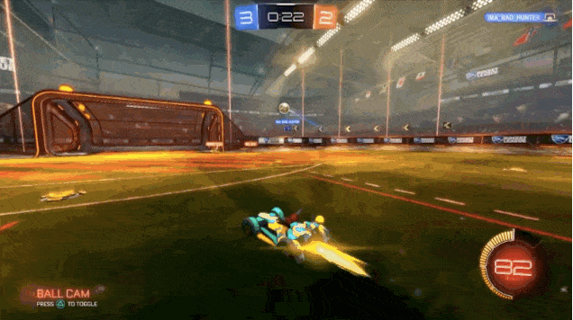

Rocket League es un videojuego de Futbol que combina coches, conducción y fútbol para crear tensos partidos en los que puede pasar cualquier cosa, el juego al principio puede parecer simple pero conforme avanzas en el juego te vas encontrando con nuevas mecanicas y una jugabilidad mas dificil por lo que tendras que mejorar y saber hacer mecanicas nuevas con cada partida jugada. En Rocket League, hasta ocho jugadores se dividen en dos equipos y utilizan vehículos propulsados por cohetes para golpear una pelota en la portería del oponente y sumar puntos durante el partido. El juego incluye modos para un jugador y multijugador, que se pueden jugar tanto localmente como en línea, incluido el crossplay
Esto es lo mas basico pero no lo menos importante que debes conocer para iniciar en este juego,sin estos movimientos, es imposible llegar a realizar alguna mecanica avanzada. aqui es cuestion de saber de forma basica utilizar los movimientos que nos otorga el juego
El flip es muy sencillo de utilizar ya que solo tienes que mover tu Joystick hacia adelante y presionar doble vez con el botón con el que saltas el cual cambia dependiendo del dispositivo en el que te encuentres. El back Flip es lo mismo que el flip normal solo que tienes que mover tu Joystick hacia atrás.
El volar en este juego nos da mucha ventaja contra el enemigo, un vuelo básico es muy sencillo de hacer, basta con pulsar el botón de salto y el botón de turbo para poder volar y direccionas tu vuelo con el Joystick derecho.
Aprender las mecánicas básicas es algo esencial para poder mejorar en el juego, por lo que te sugerimos que tengas paciencia ya que lo más importante es que practiques y que no te rindas e incluso te sugerimos que juegues con amigos para hacer de la experiencia algo mas divertido. acontinuacion te dejamos un video para que puedas aprender un poco mas rapido